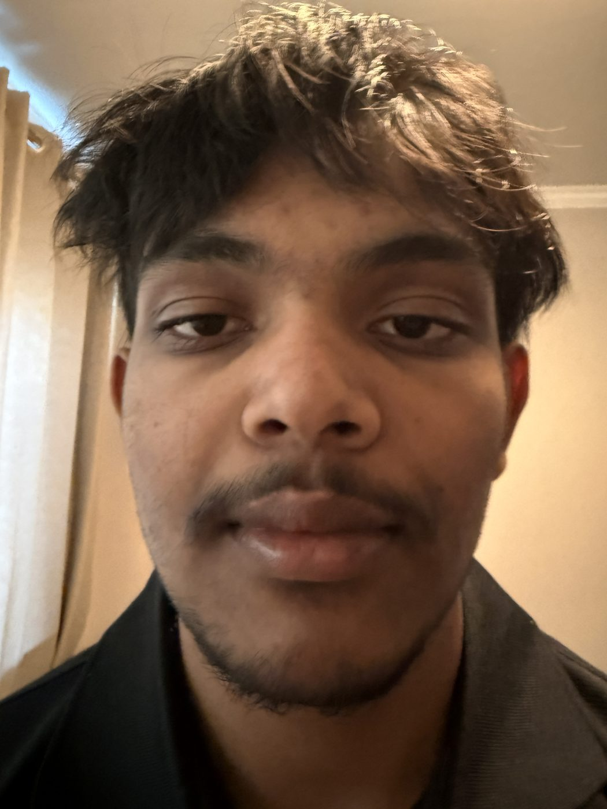
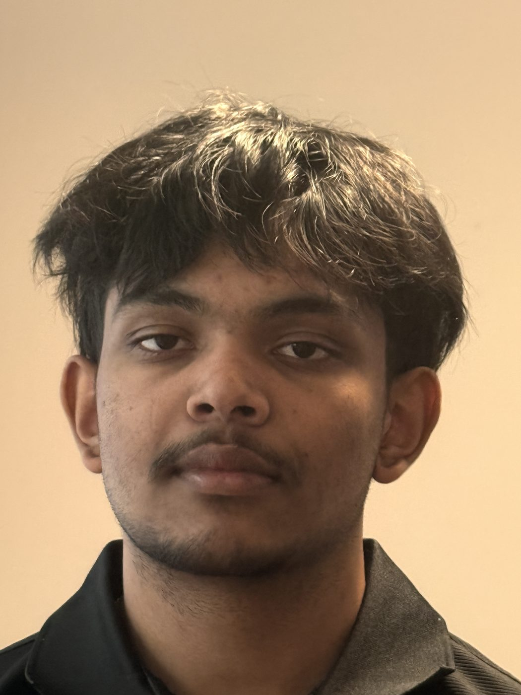
The first photo of my friend was taken up close with the wide lens (24mm equivalent); for the second I stepped back several feet and zoomed to 121mm so his face stays the same size. The close-up looks distorted because a camera magnifies objects in proportion to 1/distance: up close, his nose is significantly closer to the lens than his ears, so it gets magnified more and the face looks stretched forward. From farther back, the depth of the face is small relative to the camera distance, so every feature is magnified nearly equally and the proportions look natural.
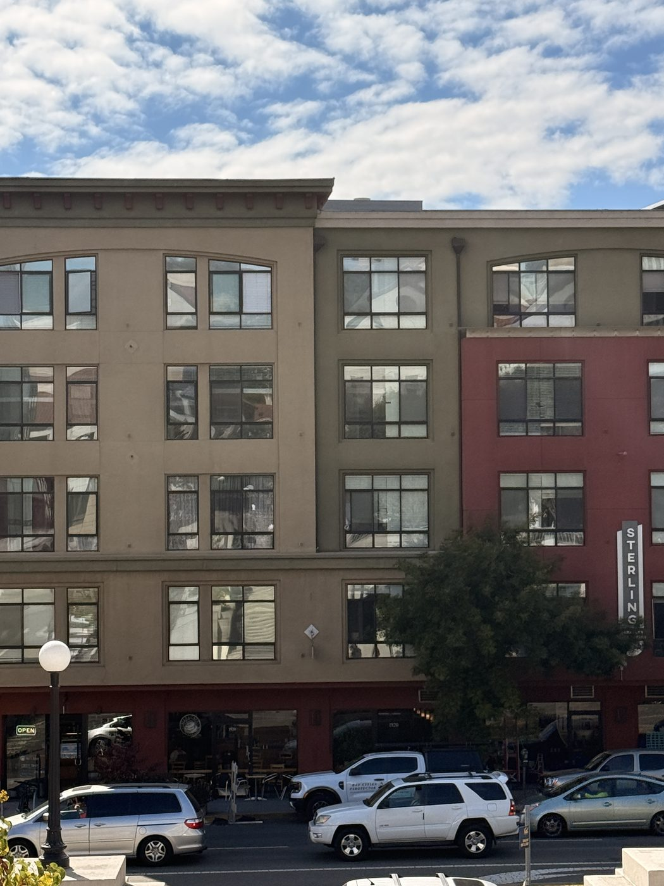
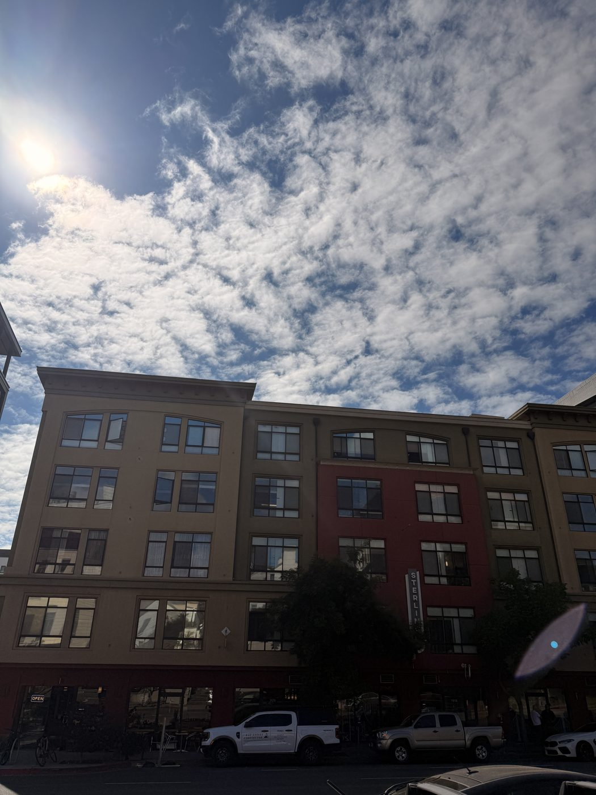
Both photos show the building at about the same size. The first was taken from far away zoomed to 76mm; the second up close at 24mm. The zoomed photo looks flat because from far away every part of the façade is at nearly the same distance from the camera, so everything is rendered at nearly the same scale. Up close, the nearest parts of the building are much closer than the farthest parts, so scale changes across the frame and the vertical lines converge. Perspective is determined by the camera's position, not the focal length — zooming only crops the view, while moving changes the geometry.
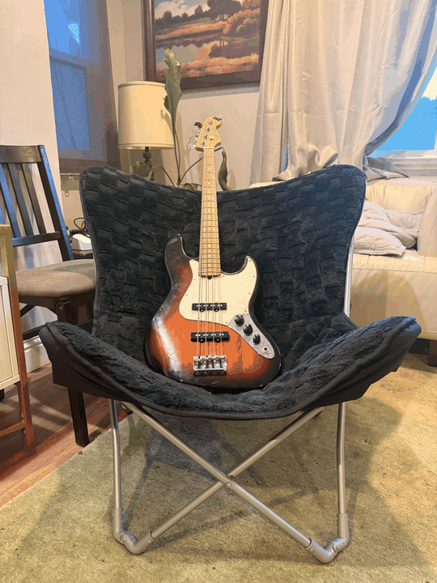
I took eight photos while walking backward and zooming in (24mm → 108mm), keeping the bass the same size in every frame, then combined them into a looping GIF. Walking backward changes the center of projection, which shrinks the background relative to the subject; zooming in magnifies everything uniformly. Doing both at once cancels the size change on the subject but not on the background, so the background appears to grow behind the subject — the dolly zoom effect.
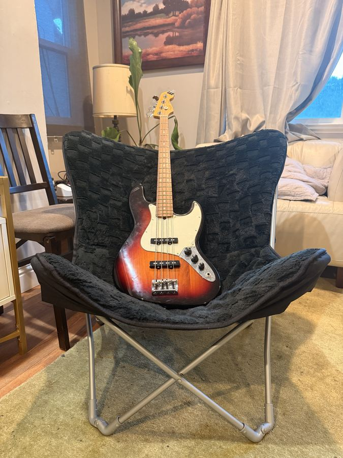
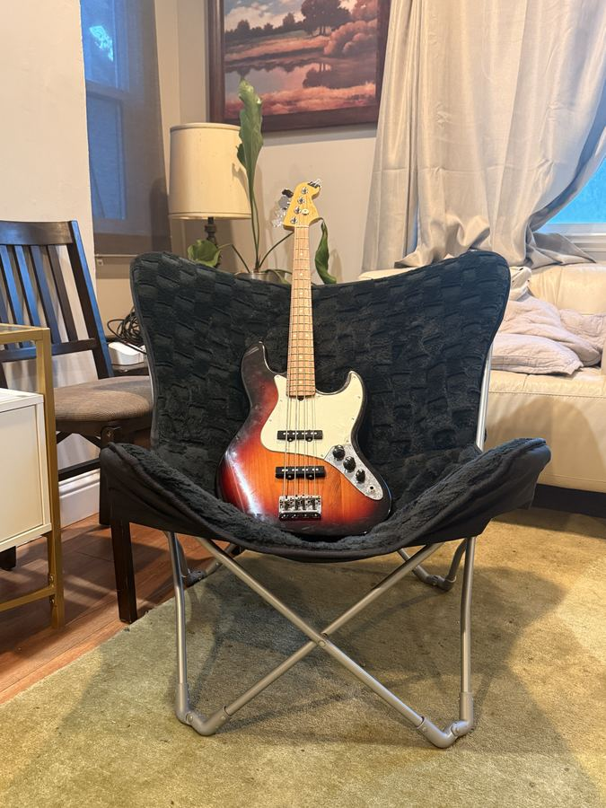
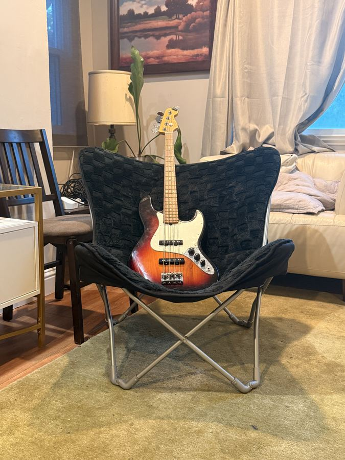
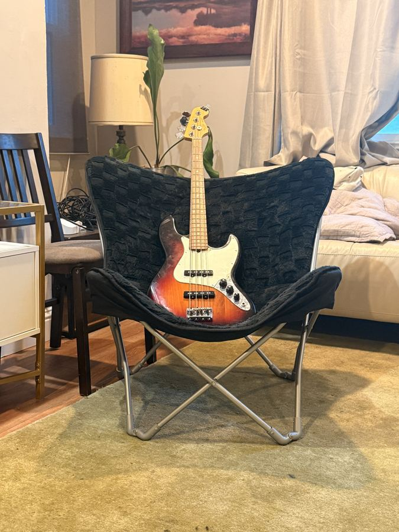
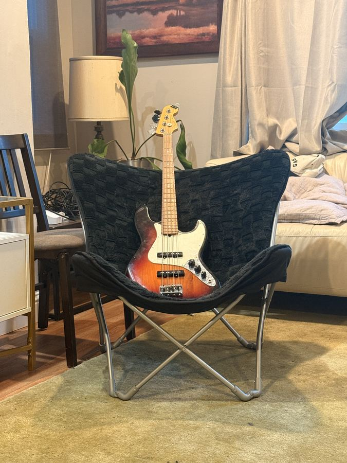
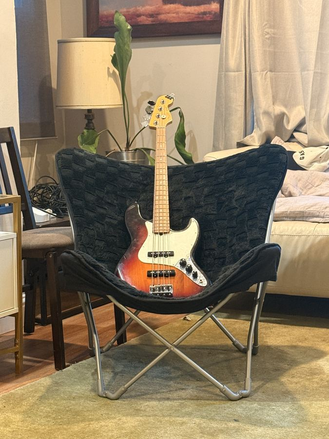
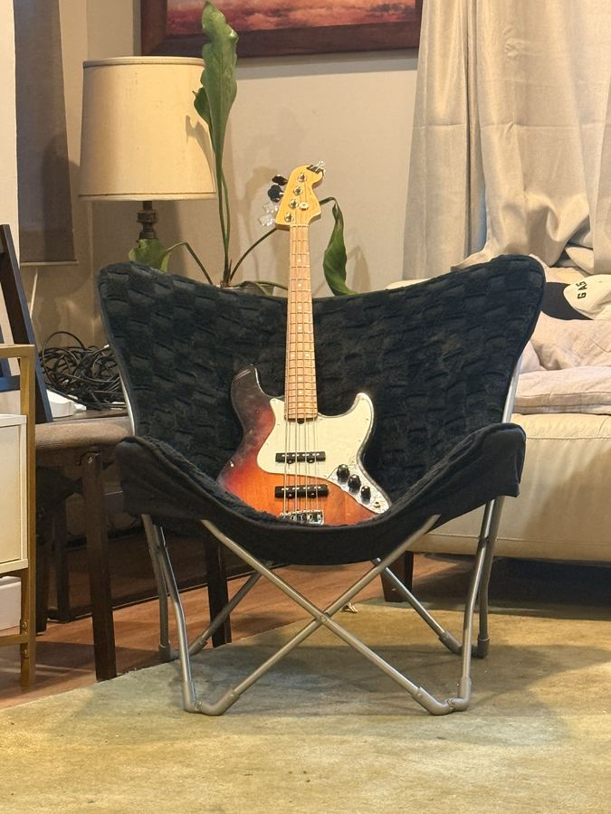
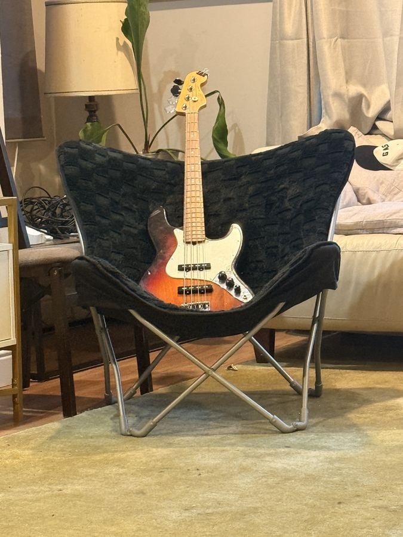